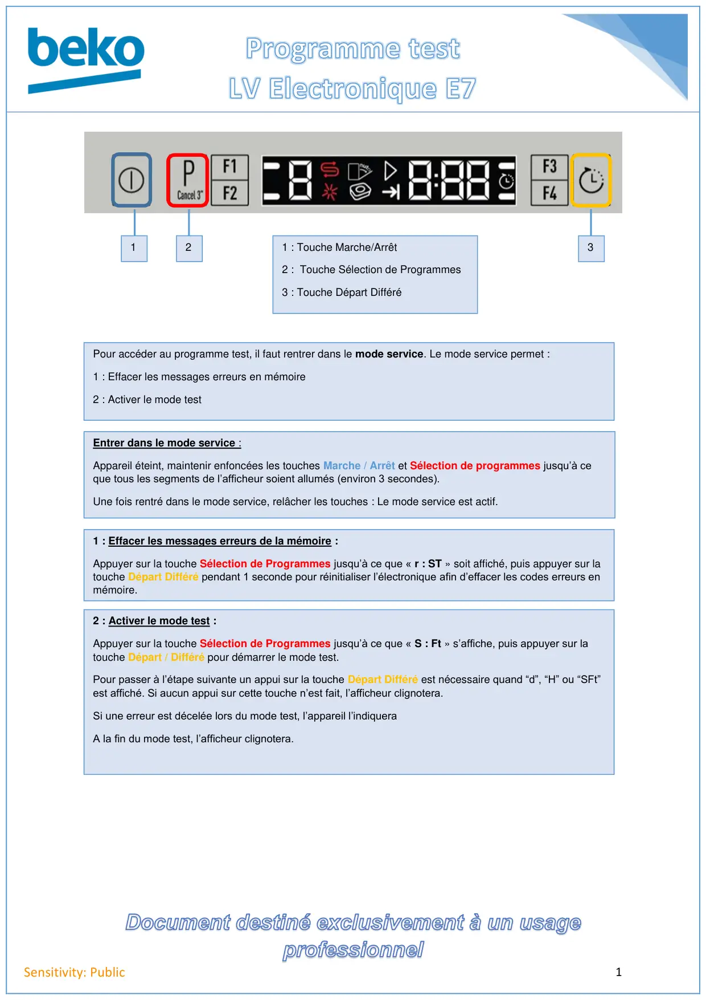
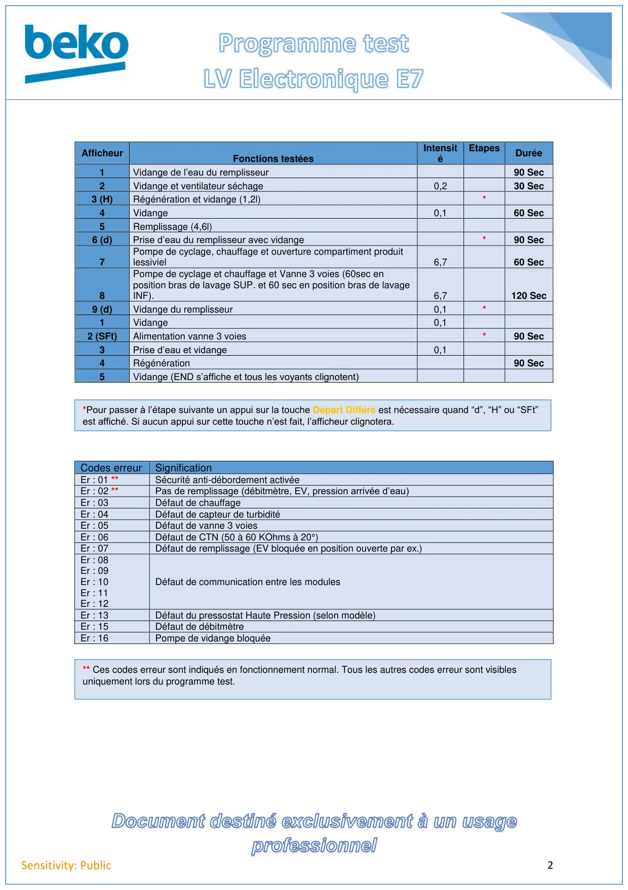
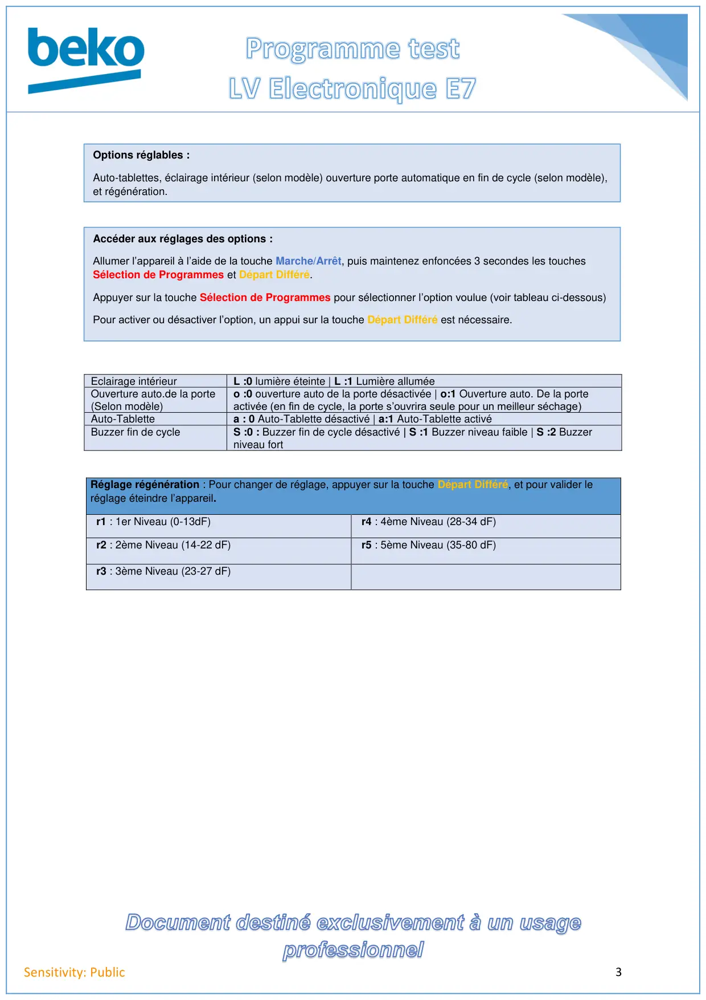

Prog Test lave vaisselle Electronique E7

1Sensitivity: Public1 : Touche Marche/Arrêt2 : Touche Sélection de Programmes3 : Touche Départ Différé123Pour accéder au programme test, il faut rentrer dans le mode service. Le mode service permet :1 : Effacer les messages erreurs en mémoire2 : Activer le mode testEntrer dans le mode service :Appareil éteint, maintenir enfoncées les touches Marche / Arrêt et Sélection de programmes jusqu’à ceque tous les segments de l’afficheur soient allumés (environ 3 secondes).Une fois rentré dans le mode service, relâcher les touches : Le mode service est actif.1 : Effacer les messages erreurs de la mémoire :Appuyer sur la touche Sélection de Programmes jusqu’à ce que « r : ST » soit affiché, puis appuyer sur latouche Départ Différé pendant 1 seconde pour réinitialiser l’électronique afin d’effacer les codes erreurs enmémoire.2 : Activer le mode test :Appuyer sur la touche Sélection de Programmes jusqu’à ce que « S : Ft » s’affiche, puis appuyer sur latouche Départ / Différé pour démarrer le mode test.Pour passer à l’étape suivante un appui sur la touche Départ Différé est nécessaire quand “d”, “H” ou “SFt”est affiché. Si aucun appui sur cette touche n’est fait, l’afficheur clignotera.Si une erreur est décelée lors du mode test, l’appareil l’indiqueraA la fin du mode test, l’afficheur clignotera.
1 / 3
2Sensitivity: PublicCodes erreurSignificationEr : 01 **Sécurité anti-débordement activéeEr : 02 **Pas de remplissage (débitmètre, EV, pression arrivée d’eau)Er : 03Défaut de chauffageEr : 04Défaut de capteur de turbiditéEr : 05Défaut de vanne 3 voiesEr : 06Défaut de CTN (50 à 60 KOhms à 20°)Er : 07Défaut de remplissage (EV bloquée en position ouverte par ex.)Er : 08Er : 09Er : 10Er : 11Er : 12Défaut de communication entre les modulesEr : 13Défaut du pressostat Haute Pression (selon modèle)Er : 15Défaut de débitmètreEr : 16Pompe de vidange bloquéeAfficheurFonctions testéesIntensitéEtapesDurée1Vidange de l’eau du remplisseur90 Sec2Vidange et ventilateur séchage0,230 Sec3 (H)Régénération et vidange (1,2l)*4Vidange0,160 Sec5Remplissage (4,6l)6 (d)Prise d’eau du remplisseur avec vidange*90 Sec7Pompe de cyclage, chauffage et ouverture compartiment produitlessiviel6,760 Sec8Pompe de cyclage et chauffage et Vanne 3 voies (60sec enposition bras de lavage SUP. et 60 sec en position bras de lavageINF).6,7120 Sec9 (d)Vidange du remplisseur0,1*1Vidange0,12 (SFt)Alimentation vanne 3 voies*90 Sec3Prise d’eau et vidange0,14Régénération90 Sec5Vidange (END s’affiche et tous les voyants clignotent)*Pour passer à l’étape suivante un appui sur la touche Départ Différé est nécessaire quand “d”, “H” ou “SFt”est affiché. Si aucun appui sur cette touche n’est fait, l’afficheur clignotera.** Ces codes erreur sont indiqués en fonctionnement normal. Tous les autres codes erreur sont visiblesuniquement lors du programme test.
2 / 3
3Sensitivity: PublicEclairage intérieurL :0 lumière éteinte | L :1 Lumière alluméeOuverture auto.de la porte(Selon modèle)o :0 ouverture auto de la porte désactivée | o:1 Ouverture auto. De la porteactivée (en fin de cycle, la porte s’ouvrira seule pour un meilleur séchage)Auto-Tablettea : 0 Auto-Tablette désactivé | a:1 Auto-Tablette activéBuzzer fin de cycleS :0 : Buzzer fin de cycle désactivé | S :1 Buzzer niveau faible | S :2 Buzzerniveau fortRéglage régénération : Pour changer de réglage, appuyer sur la touche Départ Différé, et pour valider leréglage éteindre l’appareil.r1 : 1er Niveau (0-13dF)r4 : 4ème Niveau (28-34 dF)r2 : 2ème Niveau (14-22 dF)r5 : 5ème Niveau (35-80 dF)r3 : 3ème Niveau (23-27 dF)Options réglables :Auto-tablettes, éclairage intérieur (selon modèle) ouverture porte automatique en fin de cycle (selon modèle),et régénération.Accéder aux réglages des options :Allumer l’appareil à l’aide de la touche Marche/Arrêt, puis maintenez enfoncées 3 secondes les touchesSélection de Programmes et Départ Différé.Appuyer sur la touche Sélection de Programmes pour sélectionner l’option voulue (voir tableau ci-dessous)Pour activer ou désactiver l’option, un appui sur la touche Départ Différé est nécessaire.
3 / 3